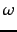

In this section we generalize the methodology of Section 6.1.2 (page  ) to machine learning of the scoring function. In Section 6.1.2 we considered a case where we had to combine Boolean indicators of relevance; here we consider more general factors to further develop the notion of machine-learned relevance . In particular, the factors we now consider go beyond Boolean functions of query term presence in document zones, as in Section 6.1.2 .
) to machine learning of the scoring function. In Section 6.1.2 we considered a case where we had to combine Boolean indicators of relevance; here we consider more general factors to further develop the notion of machine-learned relevance . In particular, the factors we now consider go beyond Boolean functions of query term presence in document zones, as in Section 6.1.2 .
We develop the ideas in a setting where the scoring function is a linear combination of two factors: (1) the vector space cosine similarity between query and document and (2) the minimum window width  within which the query terms lie. As we noted in Section 7.2.2 (page  ), query term proximity is often very indicative of a document being on topic, especially with longer documents and on the web. Among other things, this quantity gives us an implementation of implicit phrases. Thus we have one factor that depends on the statistics of query terms in the document as a bag of words, and another that depends on proximity weighting. We consider only two features in the development of the ideas because a two-feature exposition remains simple enough to visualize. The technique can be generalized to many more features.
), query term proximity is often very indicative of a document being on topic, especially with longer documents and on the web. Among other things, this quantity gives us an implementation of implicit phrases. Thus we have one factor that depends on the statistics of query terms in the document as a bag of words, and another that depends on proximity weighting. We consider only two features in the development of the ideas because a two-feature exposition remains simple enough to visualize. The technique can be generalized to many more features.
As in Section 6.1.2 , we are provided with a set of training examples, each of which is a pair consisting of a query and a document, together with a relevance judgment for that document on that query that is either relevant or nonrelevant. For each such example we can compute the vector space cosine similarity, as well as the window width . The result is a training set as shown in Table 15.3 , which resembles Figure 6.5 (page  ) from Section 6.1.2 .
) from Section 6.1.2 .
Here, the two features (cosine score denoted  and window width ) are real-valued predictors. If we once again quantify the judgment relevant as 1 and nonrelevant as 0, we seek a scoring function that combines the values of the features to generate a value that is (close to) 0 or 1. We wish this function to be in agreement with our set of training examples as far as possible. Without loss of generality, a linear classifier will use a linear combination of features of the form
and window width ) are real-valued predictors. If we once again quantify the judgment relevant as 1 and nonrelevant as 0, we seek a scoring function that combines the values of the features to generate a value that is (close to) 0 or 1. We wish this function to be in agreement with our set of training examples as far as possible. Without loss of generality, a linear classifier will use a linear combination of features of the form
![\includegraphics[width=9cm,angle=270]{Figure15.7.eps}](img1372.png) A collection of training examples.Each R denotes a training example labeled
relevant, while each N is a training example labeled
nonrelevant.
A collection of training examples.Each R denotes a training example labeled
relevant, while each N is a training example labeled
nonrelevant.
In this setting, the function
 from Equation 179 represents a plane ``hanging above'' Figure 15.7 . Ideally this plane (in the direction perpendicular to the page containing Figure 15.7 ) assumes values close to 1 above the points marked R, and values close to 0 above the points marked N. Since a plane is unlikely to assume only values close to 0 or 1 above the training sample points, we make use of thresholding: given any query and document for which we wish to determine relevance, we pick a value
from Equation 179 represents a plane ``hanging above'' Figure 15.7 . Ideally this plane (in the direction perpendicular to the page containing Figure 15.7 ) assumes values close to 1 above the points marked R, and values close to 0 above the points marked N. Since a plane is unlikely to assume only values close to 0 or 1 above the training sample points, we make use of thresholding: given any query and document for which we wish to determine relevance, we pick a value  and if
and if
 we declare the document to be relevant, else we declare the document to be nonrelevant. As we know from Figure 14.8 (page
we declare the document to be relevant, else we declare the document to be nonrelevant. As we know from Figure 14.8 (page  ), all points that satisfy
), all points that satisfy
 form a line (shown as a dashed line in Figure 15.7 ) and we thus have a linear classifier that separates relevant from nonrelevant instances. Geometrically, we can find the separating line as follows. Consider the line passing through the plane
form a line (shown as a dashed line in Figure 15.7 ) and we thus have a linear classifier that separates relevant from nonrelevant instances. Geometrically, we can find the separating line as follows. Consider the line passing through the plane
 whose height is
whose height is  above the page containing Figure 15.7 . Project this line down onto Figure 15.7 ; this will be the dashed line in Figure 15.7 . Then, any subsequent query/document pair that falls below the dashed line in Figure 15.7 is deemed nonrelevant; above the dashed line, relevant.
above the page containing Figure 15.7 . Project this line down onto Figure 15.7 ; this will be the dashed line in Figure 15.7 . Then, any subsequent query/document pair that falls below the dashed line in Figure 15.7 is deemed nonrelevant; above the dashed line, relevant.
Thus, the problem of making a binary relevant/nonrelevant judgment given training examples as above turns into one of learning the dashed line in Figure 15.7 separating relevant training examples from the nonrelevant ones. Being in the  - plane, this line can be written as a linear equation involving
- plane, this line can be written as a linear equation involving  and , with two parameters (slope and intercept). The methods of linear classification that we have already looked at in classificationsvm provide methods for choosing this line. Provided we can build a sufficiently rich collection of training samples, we can thus altogether avoid hand-tuning score functions as in Section 7.2.3 (page
and , with two parameters (slope and intercept). The methods of linear classification that we have already looked at in classificationsvm provide methods for choosing this line. Provided we can build a sufficiently rich collection of training samples, we can thus altogether avoid hand-tuning score functions as in Section 7.2.3 (page  ). The bottleneck of course is the ability to maintain a suitably representative set of training examples, whose relevance assessments must be made by experts.
). The bottleneck of course is the ability to maintain a suitably representative set of training examples, whose relevance assessments must be made by experts.